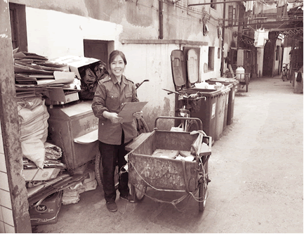
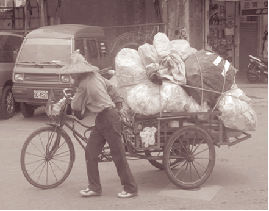

Ở thành phố San Francisco và San Jose có những người thuộc sắc dân thiểu số lái những chiếc xe tải nhỏ chở đầy giấy thùng (cardboard), giấy báo (newspaper), ve chai (bottle) lon nhôm (cans) cung cấp cho các công ty thu mua phế liệu. Một nghề, tuy được xem như hạ đẳng so với các nghề khác, ấy thế mà lợi tức hàng năm của họ lại khấm khá ra phết.
I) Con đường dẫn đến nghề nghiệp
"Recycle man" là tên người Mỹ bản xứ thường gọi cho những người chuyên đi thu lượm các loại phế liệu như: thùng giấy (cardboard), giấy báo(newspaper), ve chai (bottle) và lon nhôm (cans)… khắp mọi nơi trên các thành phố ở Hoa Kỳ.
Tại San Francisco nghề này đã phát triển nhanh chóng và số người làm nghề này có thời điểm lên khá cao.Tuy không biết được con số chính xác là bao nhiêu, nhưng căn cứ trên số lượt người đến bán phế liệu tại những công ty thu mua thì con số lên hàng trăm người trong mỗi ngày.
Anh Trung ngụ ở đường Ellis thuộc downtown SanFrancisco làm nghề này từ khi mới qua Mỹ hai tháng và đến nay đã có 10 năm thâm niên trong nghề. Cùng thời gian ấy đã biến anh trở nên đen đúa, chai sạm và già đi so với số tuổi, nhưng nét mặt luôn vui tươi. Dáng người to, khỏe, xốc vác, hai tay xách gọn 2 bành giấy đã được ép sẵn từ máy ép giấy của một nhà hàng, vừa nói chuyện anh vừa sắp xếp gọn lại những tấm giấy thùng có khổ lớn để khỏi phải chiếm quá nhiều chỗ trong thùng xe (bởi xếp gọn chặt chừng nào xe chở được nhiều giấy chừng ấy). "Xếp giấy cũng phải có nghệ thuật, nếu không biết cách xếp thì một chiếc xe truck to chỉ chở vài chục giấy thì đã đầy rồi. Nhưng nếu biết cách xếp thì dù có cả trăm giấy cũng chở hết". Anh Trung nói với ký giả Kiến Nâu của Tuần Báo Đời Mới San Jose như thế. Đưa tay lên trán quẹt những giọt mồ hôi, anh tâm sự: "Tôi làm nghề này là vì tôi muốn có sự độc lập, trên phương cách làm việc bởi nó không ràng buộc giờ giấc cũng như bị quản lý bởi một ai". Trước đây, khi mới qua Mỹ tôi làm công cho một nhà hàng, chủ là người Việt Nam sang Mỹ vào năm 1975 sau khi miền Nam bị cộng sản cưỡng chiếm. Bà Kim Anh, là tên các người làm công thường gọi đến bà trong lúc làm việc, còn tên thật của bà tôi thực sự không biết, nghe đồn trước bà là vợ của một quan chức cao cấp trong chính quyền Việt Nam Cộng Hoà, có nhiều biệt thự sang trọng trên Đà Lạt cũng như đất đai trồng cà phê ở Ban Mê Thuột. Ở nhà hàng công việc của tôi là rửa chén và dọn dẹp, lau chùi các bồn cầu trong nhà vệ sinh, việc làm này được một tháng thì chủ cho nghỉ việc bởi sau vụ tôi làm bể một chiếc dĩa lớn kiểu Nhật trong lúc rửa chén. Một buổi chiều lòng tôi thật buồn, buồn hơn là những đám mây đen đang lơ lững trên bầu trời thành phố SF. Nhận 200 trăm đồng tiền mặt cho nửa tháng tiền lương từ tay bà Kim Anh tôi bước ra khỏi nhà hàng SeaFood Thái Bình, rảo bước trở về căn phòng trong khu Apartment Downtown đã mướn vội khi mới vừa qua Mỹ.
Về đến căn phòng tôi nằm dài trên sàn gỗ mà đầu óc nghĩ ngợi lung tung. Nhiều lúc tôi tội nghiệp cho con người của tôi; đã hơn quá nửa đời người mà không có được một sự nghiệp. Suốt một thời làm việc tận tuỵ cho chính quyền Việt Nam Cộng Hoà cũng không có được một cục đất giục chim hay căn nhà lá để ở mà toàn ở nhà mướn hay ở ké nhà cha mẹ ruột.
Đến Mỹ tưởng đã thoát khỏi tình cảnh khe khắt của cuộc đời nào ngờ việc ở nhà mướn lại tái diễn. "Hội chứng thuê nhà" đè nặng trên trí não tôi đưa tôi đến sự phiền muộn.
Sau khi nghỉ việc ở nhà hàng, tôi có ý định không làm bất cứ nghề gì cho một ai nữa. Đi học lấy bằng cấp để rồi làm việc cho chính quyền Mỹ? Không, thật tình mà nói tôi không có cao vọng đó. Tôi chỉ muốn là một người bình thường và có một nghề nghiệp độc lập phù họp với số tuổi, làm con lạc đà chuyên chở tải hàng hoá để nuôi sống một gia đình 5 con và một vợ mới vừa đến Mỹ theo diện bảo lãnh của thân nhân mà tiền trợ cấp chỉ có võn vẹn trong vòng 8 tháng, sau đó phải hoàn toàn tự túc. Thế rồi nguyện ước nhỏ nhen kia như có sự phù trợ của bề trên".
Một buổi sáng trên đường ra quán cà phê Tú Kim tôi gặp một chiếc xe truck nhỏ trên xe chở đầy giấy thùng đậu trên đường Eddy trông thật kỳ quái, bởi ngoài những giấy thùng đã được xếp ngăn nắp cao khỏi hai thành tuồng làm bằng hai tấm ván gỗ thông sần sùi không một chút thẩm mỹ, đinh ốc bắt thô sơ, còn có một số dây thừng buộc chằng chịt quanh lớp giấy như dây bó một đòn bánh tét. Trong phòng lái là một người đàn ông da đen sẫm, hỏi ra mới biết tên ông là Chen người Việt gốc Miên quê ở Trà Vinh. Ông Chen làm nghề thu lượm giấy thùng từ năm 1889 khi ông và gia đình từ Boston chuyển sang sống nơi thành phố SF này. Với cái nghề "không ai muốn làm này", qua 5 năm ông Chen đã mua đứt một ngôi nhà 4 phòng trên đường Filbert đoạn trên đồi của thành phố SF, đồng thời nuôi 3 người con đang học Đại học.
Theo lời ông bà xưa thường nói: "Thà cho mượn vàng chứ ai dẫn đàng đi buôn", nhưng với ông Chen thì khác, không những ông không dấu diếm những thủ thuật trong nghề thu lượm thùng giấy mà còn chỉ cách thức, giúp đỡ và cung cấp phương tiện làm ăn cho những ai muốn làm cái nghề "bất đắc dĩ này". "Nếu anh muốn làm nghề này thì phải theo tôi học cách thu lượm giấy thùng 3 ngày mỗi tuần, đến khi nào anh thành thục biết rõ cách thức mở và xếp thùng giấy vào trong xe nhanh gọn cũng như biết tất cả những địa điểm thu mua phế liệu thì tôi sẽ cho anh mượn tiền mua một chiếc xe truck làm ăn với người ta. Cái nghề này thấp hèn trong xã hội lắm hơn nữa làm bằng tay chân dầm mưa dãi nắng cực khổ nhưng bù lại sự thu nhập khá cao". Ông Chen nói như vậy.
Lời nói của ông Chen có vẻ thành thật và như mời mọc một người vừa đến Mỹ không việc làm như tôi và tôi đã nhập cuộc không do dự.
Sau khi thực tập cách thức lượm và xếp giấy khá rành rẽ với ông Chen, tôi bắt đầu hành nghề. Ngày đầu tiên bắt tay vào nghề tôi thật vất vả vì vừa không biết đường đi vừa không biết chỗ nào có giấy để thu lượm, mặc dầu ông Chen đã nhường lại cho tôi một số điểm giấy của ông. Tôi cứ lẩn quẩn trên một vài con đường quen thuộc trong thành phố và một số nhà hàng và chỉ thu nhặt được loại thùng giấy nhỏ đựng rau quả hay sữa thường nhẹ, mỏng không dầy, không nặng nên cả một xe truck đầy giấy mà không được bao nhiêu tiền, nhưng cũng không thất vọng cho một ngày lao động. Thế rồi công việc dần dần được cải tiến, tôi đã quen thuộc đường xá và một số tụ điểm có nhiều giấy nên việc thu nhập tương đối khả quan.
Hiện nay, tôi có hai ngôi nhà và một nhà hàng phở trong vùng Sunset, nhưng tôi vẫn không bỏ nghề này.
"Tôi nghĩ tới ngày xưa chú Hoả là người giầu nhất Sàigon và hầu như cả miền Nam. Ngôi nhà đồ sộ nguy nga của chú Hoả nằm chiếm cả một khu vực rộng lớn gần 200 hécta ở quận Nhì chiếm cả khu tứ giác Phó Đức Chính - Nguyễn Công Trứ - Hồ Văn Ngà - Calmette. Hơn thế nữa, đa số phố lầu, nhà cửa đất đai ở vùng quận Nhì đều là tài sản của chú Hoả. Cả chợ Bến Thành cũng được xây cất phần lớn bằng tiền của chú Hoả là một bằng chứng hiển nhiên về sự thành công giầu có của nghề thu mua phế liệu, nên tôi đã không ngần ngại làm nghề thu lượm giấy thùng và phế liệu khi qua Mỹ được 3 tháng". Đó là lời tâm sự của anh Hậu khi được hỏi: Tại sao anh chọn nghề thu nhặt phế liệu của ký giả Kiến Nâu Tuần Báo Đời Mới San Jose.
Năm 1993 anh Hậu định cư tại SF, Hoa Kỳ theo diện H.O.Với đồng tiền trợ cấp ban đầu của chính quyền Mỹ không thể tạm đủ cho cuộc sống với quá nhiều nhu cầu như gia đình anh, nên tất cả những người trong gia đình phải tìm kiếm việc làm. Anh Hậu thực hiện những suy nghĩ của mình. Anh mua một chiếc xe truck bằng số tiền đã dành dụm được trong những năm tháng ăn eo phe và rồi lên đường chiến đấu với "lũ rác rến, giấy thùng".
Qua 5 năm lăn lộn trong nghề gia đình anh Hậu đã thở phào một cách nhẹ nhõm khi không còn một ai trong gia đình than phiền rằng ở nhà chật chội, nhà gì như là một ổ chuột nữa. Anh Hậu đã dời ra khu ngoại ô thành phố SF tậu một cái nhà 5 phòng ngủ khá xinh xắn trên đường Gabiel, khu dành cho những người Mỹ trắng.
Trong một dịp làm phóng sự cho cộng đồng SF về hội chợ Xuân Quý Mùi, ký giả Kiến Nâu quá đổi ngạc nhiên khi thấy anh Hậu đang ngồi cùng với một người đàn bà trẻ trên chiếc xe Mercedes mui trần loáng bóng. Gặp lại ký giả Kiến Nâu anh Hậu nhận ngay ra người cách đây vài năm đã phỏng vấn mình về nghề lượm giấy. Trong chén thù chén tạc, anh Hậu nói: "Tôi đã thoát khỏi những túng quẫn ban đầu khi mới đặt chân qua đất Mỹ. Giờ đây ngoài căn nhà xinh xắn ở đường Gabiel tôi còn có phòng bán đồ trang trí ở phố Tàu mới. Tôi nghĩ đây là do công sức làm việc cộng với sự may mắn trong nghề thu lượm giấy thùng trong thời gian qua của tôi. Ngày trước theo hiểu biết thì việc làm giàu của chú Hoả cũng có sự may mắn. Dân gian truyền khẩu rằng: Có một ông Tây qua Nam kỳ làm ăn. Trong một thời gian dài, ông ta đã tom góp được một số tài sản rất lớn. Trong một tai nạn đột xuất, ông chết mà chẳng kịp trăn trối lại cho con cháu, vì vợ con ông ta sống ở Pháp. Luật sư yêu cầu con cái ông ta sang Việt Nam thừa kế di sản của người cha quá cố.
Người con này không có ý định tiếp tục sống ở Việt Nam nên cho phát mãi hết tài sản của cha mình. Tài sản này rất lớn, gồm nhà cửa, đồn điền, cơ sở kinh doanh và một số tiền lớn gởi ở ngân hàng. Người con bán tất cả đồ trong nhà, vì người chủ mới không muốn sử dụng đồ đạc của người chết.
Lúc đó chú Hoả đang mua bán ve chai, chú bèn đến thầu mua tất cả những đồ lặt vặt ấy. Trong số những đồ đạc linh tinh này, có một số tấm thảm trải nền nhà đã cũ nhưng còn xài được. Chú Hoả đem tấm thảm chải bụi sạch định để bán lại thì khám phá ra cả một tài sản to lớn gồm vàng lá, tiền vàng, giấy bạc loại lớn và một số kim cương được nguỵ trang lót giữa hai lần tấm thảm. Có số tiền "từ trên trời rơi xuống" này, chú Hoả bắt đầu mua sắm nhà cửa, đất đai, xây nhà cho thuê, đầu tư kinh doanh và trở thành người giàu tiếng tăm nhất trong giới người Hoa tại thành phố Sàigon Chợ Lớn vào đầu thế kỷ 20. (1) Tôi không có được sự may mắn hốt trọn gói một số tiền kết sù như chú Hoả nhưng trong thời gian qua với nghề nghiệp lượm thùng giấy bất đắc dĩ này tôi cũng có được những may mắn nhất định để có được tài sản như hôm nay.
Số là trong một lần đánh xe đi lấy giấy ở khu Sunset, khi xe chạy qua khỏi khu rừng thông thơ mộng của thành phố SF, tôi bất chợt nghe tiếng kêu của một người xen qua tiếng gió hú. Vì tốc độ xe cũng tương đối khá cao 45miles / giờ nên khó phân biệt được tiếng kêu của đàn ông hay đàn bà. Qua kính chiếu hậu của xe, tôi chỉ thấy một người đang lái chiếc xe Lexus màu kem chạy đuổi phía sau xe tôi vẫy tay như ra hiệu cho tôi ngừng lại.(vì khu vực đó cấm dùng còi nên không thể dùng còi để ra hiệu) Tôi hạ tốc độ xuống còn 30 miles, và sang lane phải để có thể ngừng lại bất ngờ. Khoảng cách giữa tôi và người kia ngắn lại sau 5 phút /giờ rượt đuổi, chiếc Lexus đã ở vị trí song song với xe tôi. Trên xe là một người đàn ông ngoại quốc mặc chiếc sơ mi màu vàng, bên cạnh là một người đàn bà trạc tuổi 30 mặc chiếc áo lụa màu trắng hở cổ để lộ nguyên phần da trắng mịn màng cùng với nửa hai "quả đồi tội lỗi".
Tôi cho xe tấp sát vào lề và ngừng lại. Chiếc xe Lexus màu kem vượt qua khỏi đầu xe tôi, rồi cũng ngừng. Hai xe cách nhau vài mét nên càng thấy rõ khuôn mặt cũng như thân thể của người đàn bà. Ăn vận trong một bộ đồ dành cho dạ tiệc Bà Nicole không thể nào không làm cho biết bao đấng mày râu buộc phải ném mắt nhòm ngó. Trước nhất là khuôn mặt trái xoan với mũi dọc dừa tuyệt diễm. Bà Nicole đang làm tăng vẻ đẹp mỗi khi cười.Và "hai quả đồi tội lỗi" là vị trí gợi kích cảm nhất của giới đàn ông mỗi khi nhìn bà. Theo sau ông Jimm, bà Nicole gật đầu chào tôi và nói rằng: được hân hạnh biết tôi và cũng xin lỗi về việc chồng bà ông Jimmy đã gọi tôi một khoảng xa dài ngoài đường phố vì không thể dùng còi để ra dấu hiệu bảo ngừng. Ông Jimmy xin phép được chen vào giữa câu chuyện vợ ông và tôi. Ông nói hiện ông là giám đốc của một công ty chuyên sản xuất giấy cung cấp cho văn phòng phẩm và dụng cụ học sinh ở Balboa. Công ty của ông sắp di chuyển đi Nhật Bản và có ý nhờ tôi giúp hộ dọn trống kho giấy trắng và computer đã quá khổ mà khách hàng không nhận. Nếu tôi đồng ý ông sẽ đưa tôi đến công ty của ông để quan sát rồi thực hiện việc thu nhặt. Thời điểm đó là vào tháng giêng năm 1998, giá thu mua phế liệu bỗng nhiên tăng vọt, các công ty thu mua cạnh tranh với nhau ráo riết và nâng giá giấy các loại lên đến kỷ lục và còn cho nhiều bonus cho người đến bán hàng.
Theo thống kê của một cơ sở thu mua phế liệu ở Pier 49 (cảng SF), giá chính thức cho một ton giấy computer (2000 pounds) vào khoảng 500 đến 600 đô la, vì loại giấy này được xem là giấy cao cấp, có thể tái chế nhanh mà ít tốn kém, hoặc đem sử dụng lại cho những cơ sở thương mại nhỏ trên đất Mỹ, hay xuất cảng sang các nước đang phát triển vùng Á Châu.
Giấy thùng cũng lủi thủi tiến sau giấy trắng, giấy màu và sau cùng là giấy báo (newspaper) cũng chiếm một vị trí giá trị trong nhóm phế liệu là 120 đô la cho 1 ton.
Thành phố SF được xếp loại là một trong những thành phố có mức ô nhiễm cao, (theo Thống kê của Bộ Giao Thông Vận Tải Liên Bang năm 1999) so các thành phố khác của Mỹ, nhưng lại càng ô nhiễm hơn khi trên địa bàn thành phố có thêm khoảng 200 chiếc xe truck nhỏ, lớn chở giấy thùng và những loại phế liệu khác, chưa kể những xe du lịch của những người các sắc tộc khác như Phi Luật Tân, Đại hàn, Tàu, Mễ, Campuchia, Lào v.v. Họ là những nhân viên trong làm việc trong các cơ sở hay, công ty ngụ trên địa bàn thành phố. Sau giờ làm việc họ tranh thủ kiếm một ít giấy thùng, hoặc giấy trắng đem bán để tăng thêm phần thu nhập cho cá nhân, hoặc gia đình. Đó là chưa kể đến hàng trăm người không có phương tiện chuyên chở họ dùng những xe của những siêu thị (shopping cart) để thu nhặt giấy thùng hay chai lọ. Chiếm đa số trong thành phần là người Mỹ đen hoặc những người homeless.
Ông Jimmy đưa tôi đến xem một nhà kho thuộc công ty của ông trên đường Ocean, vùng mạn đông của thành phố SF. Nhà kho không được lớn lắm, trước đây là một cái phòng làm việc cho khoảng 20 nhân viên, nhưng không biết lý do gì công ty cung cấp gỗ sàn nhà lấy làm nhà kho và khi công ty giấy của ông Jimmy đến thuê vẫn sử dụng phòng này chứa giấy.
Giấy các loại chứa từ sàn cao đến trần, phần lớn là giấy cuộn và giấy computer. Ông trao cho tôi một chiếc chìa khoá dùng mở một chiếc hộp trong đó có cần điều khiển của chiếc máy đẩy, (push up machine) khi người ta giật mạnh cần này thì những cuộn giấy trên cao sẽ từ từ đưa vào một sợi dây sên (chain) từ đó sên đưa những cuộn giấy ra gần nơi cửa cho nhân công bốc vác.
Hai cuộn giấy lớn nhất đã được hạ xuống và nằm ngay trước cửa kho khi tôi vừa giật chiếc cần trong hộp. Ông Jimmy nói: "ông cho xe tải vào tới cửa kho tôi sẽ cho người giúp ông đưa nó lên xe, chỉ có hai thứ này là nặng và khó di chuyển còn thứ khác thì là những giấy rời dễ nhặt và vận chuyển bình thường". Hai người nhân công Mễ có mặt khi tôi vừa lái chiếc truck của tôi vào cửa. Cả hai thanh niên này đều mới vừa qua Mỹ 6 tháng, họ làm với ông Jimmy với tính cách một công nhật, nghĩa là có làm có ăn, không làm không ăn, làm bao nhiêu ăn bao nhiêu, làm ít ăn ít, làm nhiều ăn nhiều. Dĩ nhiên họ không có những phúc lợi nào của công ty dành cho, ngoại trừ họ làm thêm giờ.
Sau ba ngày dọn sạch giấy trong kho, ông Jimmy gặp lại tôi đưa cho một tấm ngân phiếu 300 đô la gọi là trả thù lao cho việc dọn dẹp kho của ông và từ biệt về Nhật. Tôi cố tình quan sát coi có bà Nicole đến công ty trong những ngày tôi dọn dẹp kho giấy ở đó, nhưng đã không thấy bà, lòng tôi hơi se lại nghĩ tới chuyện vu vơ. Qua chuyến dọn kho cho ông Jimmy tôi đã học được nhiều giá trị trong đời sống cần lao và luôn nghĩ đến câu "tận nhân lực tri thiên mệnh". Ông Trời sẽ không bất công với một ai biết đem sức mình ra đổi lấy cơm áo. Bài học này cũng chẳng dành riêng cho sắc tộc nào, hễ chịu khó làm việc thì ắc hẳn có kết quả. Ông vua không ngai của vương quốc Chợ Lớn Trần Thành đã trả lời cho mọi người về tính làm việc cần mẫn siêng năng. Từ một cậu thanh niên chuyên đi rửa thùng, xúc bọng mà sau này có tài sản lên đến hàng tỷ đồng.
II) Nghề thu lượm ve chai cũng lắm nhiêu khê
Bên cạnh những người thành đạt trong nghề thu lượm ve chai, cũng có người khổ sở vì nghề này. Từ những nhà kinh doanh nhỏ (buôn bán ngoài chợ trời) họ đã bỏ nghề chuyển sang nghề thu lượm ve chai, có những người bỏ ra số tiền khá lớn, sắm sửa những phương tiện chuyên chở để cùng cả gia đình hành nghề, nhưng không mấy khấm khá.(ở đây chỉ nói đến những người đi thu lượm ve chai, chứ không nói đến những người thu mua ve chai trên đất Mỹ)
a) Nạn giành giựt giấy thùng.
Buổi sáng thức dậy sớm và ra khu phố X trên đường Market SF, bạn sẽ thấy một đoàn 5 đến 10 người đẩy những chiếc xe Shopping cart trên xe chứa đầy giấy thùng và những vật phế liệu khác. Họ nhắm hướng trạm thu mua cứ thế mà đi, họ cười nói những ngôn ngữ khác nhau, nhưng khi giao tiếp với nhau tiếng Anh vẫn là chính. Ký giả Kiến Nâu đã gặp một người Việt Nam có mặt trong đoàn. Qua thăm hỏi ông Tân cho biết: ông đến Mỹ từ năm 1999, khi đến Mỹ 8 tháng vợ ông đã ly dị và lấy một người đàn ông khác. Hai đứa lớn cũng bỏ ông đi lập nghiệp tiểu bang xa. Không còn người thân nào bên cạnh, ông sống đời cô độc và phải lo mọi thứ. Ông xin việc nhiều nơi, nhưng không có một cơ quan nào nhận bởi lý do ông lớn tuổi. Và để có tiền sinh hoạt cũng như giải quyết vấn đề nhà mướn, ông buộc phải lao vào cái nghề hạ đẳng này.
Ông Tân vén ống quần lên chỉ cho ký giả Kiến Nâu một vết sẹo vừa mới lành và nói: "đây là hậu quả của những ngày đầu thu lượm giấy thùng bằng xe Shopping cart. Nếu ông ký giả muốn biết tôi sẽ kể cho nghe".
- Vâng, ông cứ tự nhiên.
"Sự việc xảy ra vào một buổi chiều mùa đông năm 1989, khi tôi đang đẩy chiếc xe shopping cart băng qua đường Eddy thuộc vùng downtown thành phố SF, đến một tiệm Liquor lấy số giấy thùng đã được chủ tiệm xếp sẳn để ngoài hàng hiên. Tôi vừa cúi người nhặt một thùng thì tôi nghe tiếng người nói: "Giấy đó của tao, mầy hãy bỏ xuống. Đồ quân ăn cắp". (That is my cardboard. Sucker) Một gã Mỹ đen từ phía xa chạy xấn lại xô tôi té nhào, hai tay của hắn chộp hai thùng giấy rồi ung dung ra đi và còn nói vói lại "tao cấm mầy không được đến địa điểm này nữa nhé".
Không cần biết hắn nói thứ gì, tôi lồm cồm ngồi dậy đẩy xe qua địa điểm khác, nhưng gã Mỹ đen xuất hiện trở lại, trên tay hắn cầm một chai bia và miệng chửi luôn mồm có ý kỳ thị người Việt. Và vì thể diện dân tộc tôi đã cho hắn một trận.
Chỉ sau nửa giây khi tiếng chửi của hắn vừa bay ra khỏi miệng thì hắn đã té nhào ra hành lang của tiệm rượu bởi thanh gỗ dùng để chận xe mỗi khi đẩy xe đi thu lượm những vùng đồi. Tôi bổ mạnh vào đầu của hắn một cách bất ngờ, hắn không cơ hội né tránh nên lãnh đủ thanh gỗ dọc từ đầu xuống tới lỗ tai và nói mọi người xung quanh biết rằng, hắn là một tên vừa ăn cướp vừa la làng. Bị té vì đòn đau hắn lồng lộn điên tiết bò dậy định dùng chai bia đánh tôi, nhưng không kịp nữa rồi hắn lại té quỵ xuống trở lại một lần nữa và không thể đứng lên được bởi hai ống quyển của hắn là mục tiêu cho thanh gỗ của tôi. Tôi đập lia đập lịa vào chân của hắn, hắn không kịp phản ứng. Thực tế tôi không có ý định đánh hắn như thế, nhưng vì tính tự ái dân tộc, nên tôi cho hắn một bài học để đời rằng là đừng bao giờ xâm phạm đến sắc dân Việt Nam đang sống trên đất Mỹ này.
Cảnh sát bắt cả hai về tội gây rối trật tự công cộng. Khi ra khỏi bót cảnh sát sau vài ngày. Tôi tiếp tục thu lượm ve chai.
Một buổi trưa, thành phố SF dường như bị bao phủ bởi trận mưa mây và giông nhẹ, do ảnh hưởng cơn bảo số 8 đưa vào từ biển Thái Bình. Mọi người đều sinh hoạt dưới mưa. Những chiếc xe thu lượm giấy thùng vẫn có mặt trên khắp nẻo phố để tìm lấy những tấm giấy được chủ nhân các cơ sở kinh doanh đã xếp sẳn và để một nơi nào đó. Đội quân shopping cart cũng âm thầm chiến đấu dưới mưa. Tôi di chuyển chiếc shopping cart dọc theo con đường Franklin, để thu một số thùng giấy của một cơ sở kinh doanh vừa ném ra đường, bỗng nhiên tôi thấy gã Mỹ đen đi tới cùng người đàn bà cũng da đen. Nghĩ nhanh trong đầu tìm cách đối phó khi hắn nhận diện ra mình là kẻ đánh hắn và hắn sẽ trả thù, nhưng ý nghĩ chỉ là ý nghĩ. Hắn không nhận ra tôi, hắn đi lướt qua tôi và vào một tiệm rượu, (có lẽ vì hai người đi cùng một cây dù và cũng muốn tranh thủ vào núp mưa nên không để ý đến tôi.)
Tôi rời khỏi khu thương mại trên đường Franklin tiến về phố Nhật. Khi tôi vừa qua khúc quanh đường Geary thì bị một chiếc xe hơi nhỏ (compact car) đụng vào chiếc shopping cart của tôi. Chiếc shopping cart lật nhào đè trên thân thể của tôi. Sau khi ra khỏi bệnh viện tôi phải đi nạn vì chân trái của tôi vừa được giải phẩu để lấy một cây đinh nhọn. Tưởng bỏ nghề đi tìm nghề khác sau khi khỏi bệnh, nhưng rồi cái nghề thu lượm ve chai này vẫn bám chặt lấy tôi.
b) Ngôi chợ Mỹ đầy tranh chấp
California Market là tên một dãy siêu thị của người Mỹ mà giới thu lượm giấy thùng người Việt thường gọi tắt là chợ Mỹ. Chợ toạ lạc trên đường California và chiếm cả một block đường dài trên vùng đồi Fremont. Chợ có hàng ngàn nhân viên làm việc nhiều ca. Có parking rộng đầy đủ phục vụ cho khách hàng. Bạn có thể đứng trên đồi Frement nhìn xuống trong vòng nửa giờ sẽ đánh giá được mức sinh hoạt nhộn nhịp và có thể đoán được sự thu nhập của nó.
Có lẽ vì sức tiêu thụ của khách hàng ở vùng này nên có thể nói, chợ có số lượng giấy thùng thải ra hàng ngày rất lớn và số giấy này nuôi sống nhiều gia đình làm nghề thu lượm giấy nên họ thường tranh nhau để lấy được số giấy thùng của chợ này. Ít nhất là 10 chiếc xe truck đến thu lượm giấy thùng chợ CaLi mỗi ngày. Họ là Mễ, Việt hoặc các dân tộc thiểu số khác. Họ canh chừng cửa nhà kho để được lấy số thùng giấy từ nhân viên đưa ra. Cứ mỗi ngày cửa nhà kho của chợ mở cửa hai lần để các nhân viên phục dịch đưa giấy ra các thùng recycle đã được đặt sẵn trong một khu riêng biệt. Giờ giấc mở cửa không theo một lịch trình nào cả có lẽ công việc này do sự sắp xếp của nhân viên. Ít nhất có 10 thùng recycle trong một khu. Chợ có nhiều khu dành cho thùng recycle được thiết kế cẩn thận bao quanh bởi một hàng rào dây thép lưới B 40.
Ông Lâm Lùn cùng vợ là người nhặt giấy thùng bằng xe truck có thâm niên trong nghề, đã tâm sự với ký giả Kiến Nâu. "Ông nhà báo có biết không từ khi tôi nghỉ làm quét dọn cho phòng massage của bà Li li, tôi sang nghề nhặt giấy thùng này cuộc sống của gia đình tôi tương đối yên ổn, tuy nhiên công việc cũng không dễ dàng như sự truyền miệng về cái nghề này. Tôi đã bỏ nhiều công sức và thời gian để xây dựng những "mối" phát triển thêm những điểm lấy giấy thùng. Chỉ tính ở ngôi chợ này thôi, tôi đã có 3 khu vực được phép lấy giấy. Nhưng rồi cũng không thu nhặt hết được bởi, nhiều bạn đồng nghiệp đã đánh cắp tất cả.
Người Việt hay người Mễ thu lượm giấy thùng bằng xe truck đều có tham vọng giống nhau là quyết làm sao cho mình được nhiều giấy, do đó của ai mặc kệ ai, có cơ hội là lấy cắp thôi, nên việc tranh chấp thường xuyên xảy ra.
Tôi nhớ mùa đông năm 1998 trời SF thật lạnh, những người không nhà phải khốn đốn lắm mới chịu nổi qua một đêm lạnh, có người đã chết và dĩ nhiên là thi thể được cảnh sát đem đi. Nhưng cũng có những xác chết cho tới ngày hôm sau mới được phát giác do những người lượm giấy thùng. Tôi đã gặp một xác chết nằm co trong ụ giấy của tôi sau chợ và đã báo với cảnh sát. Cảnh sát cho biết người chết là một người đàn ông vô gia cư tuổi 50. Hàng ngày ngoài việc đi ăn xin ra, ông còn dùng xe shopping cart thu lượm giấy thùng và lon chai để bán độ nhật. Chợ Mỹ là nơi ông thường xuất hiện để nhặt những phế liệu nhẹ và rồi đem bán cho một trạm thu mua gần đó. Lúc ông còn sinh tiền, giới thu lượm ve chai thường hay tránh né ông, vì không muốn gây gổ với một người không nhà và hút sách xì ke như ông. Nhưng cũng không có một người thu lượm giấy thùng bằng xe truck nào mà không bị ông cự cãi một vài lần. Ông chết thật tội nghiệp, có người trong giới thu lượm giấy thùng đã mua nhiều hoa và nhang khói đến viếng ông trong nhà quàn.
Như thường lệ 12 giờ trưa, tôi lái xe đến các tụ điểm trong chợ để lấy giấy, nhưng vào ngày X, xe tôi đến nhưng đợi mãi không thấy giấy đâu cả và các nhân viên trong kho bảo rằng đã giao giấy cho người khác là người nhà của tôi. Thật quá ngạc nhiên, tôi tìm viên quản lý chợ để hỏi cho ra sự việc, nhưng không gặp và phụ tá cho tôi biết có người đã bỏ tiền ra mua số giấy này rồi. Ngày hôm sau, tôi đánh xe đến địa điểm sớm hơn chờ nhân viên mở kho lấy giấy, nhưng không thể lấy được bởi cảnh sát và bảo vệ chợ đã ập đến không cho tôi đậu xe gần cửa kho. Tôi di chuyển ra khỏi parking lot của chợ và cho xe về hướng phố Tàu mới mà lòng buồn vô hạn".
III) Nỗi đau trong nghề thu lượm giấy thùng
a) Cái chết của người đàn ông
Một ngày nọ, khi thu giấy trên đường California, tình cờ tôi gặp một chiếc xe truck chở đầy giấy thùng chết máy nằm ven đường và cảnh sát cũng đang điều động xe thô để di chuyển chiếc xe đi nơi khác. Người lái xe này là một người đàn bà Việt Nam độ tuổi 40, bà mặc một chiếc áo lạnh trùm đầu nên khó nhận diện người quen hay lạ, nhưng với giọng nói, tôi đoán được bà ấy tên Hương, chồng bà mới vừa chết sau một tai nạn nghề nghiệp.
Vụ án Ông Mạnh, người thu lượm giấy thùng chết, đã làm chấn động cả thành phố SF vào thập niên 90.
Ông Mạnh là sĩ quan Quân Lực Việt Nam Cộng Hoà, qua Mỹ theo diện H.O 9. Ông gặp bà Hương lúc hai người cùng đi học ESL và sau đó họ sống với nhau như vợ chồng. Bà Hương đã có một đời chồng trước khi gặp ông Mạnh. Vết thương tím bầm sau gáy của ông Mạnh là nguyên nhân đưa ông đến tử vong đã làm cho giới thu lượm giấy thùng nghi ngờ khả năng có dính líu đến người chồng trước của bà Hương. Ông Mạnh và bà Hương sống trong căn phòng thuê trên đường Hyde. Hai người hằng ngày lái xe thu lượm giấy thùng trên toàn địa bàn thành phố.
Một buổi chiều mưa nặng hạt, nhiều khu vực trong thành phố có gió mạnh, ông Mạnh không thể lái xe đi khắp những tụ điểm thu nhặt giấy, mà chỉ thu nhặt ở những nơi gần nhà ông. Mưa mỗi lúc mỗi tăng thêm cường độ và gió cũng không kém gì mưa. Gió thổi làm gãy những cành cây, gây trở ngại giao thông cho một số tuyến đường. Một chiếc xe du lịch đậu dọc bên lề đường O’farrell bị, một cành cây rơi trúng làm vỡ mặt kính trước phòng lái. Không thể tiếp tục thu lượm giấy vì trời mưa và giông, ông Mạnh quay xe về nhà tìm chỗ đậu trên đường Hyde, nhưng mất hơn một tiếng đồng hồ ông cũng chưa tìm ra được chỗ đậu cho xe ông. (ở thành phố SF sau 6 giờ chiều, người lái xe có thể đậu xe qua đêm trên một số tuyến đường qui định, mà không phải bị phạt) Bà Hương nôn nóng về nhà để kịp xem chương trình tuyển lựa Hoa Hậu Hoàn Vũ nên bảo chồng cho bà về trước. Ông Mạnh chìu ý vợ.
Bà Hương thong thả bước ra khỏi phòng lái của chiếc xe truck hiệu Toyota màu cam và tay kéo chiếc áo lạnh trùm đầu như để tránh những hạt nước mưa làm ướt tóc, rồi lầm lủi tiến về nhà. Đi một đoạn bà quay lại nhìn chồng trong khi ông Mạnh còn tiếp tục tìm chỗ đậu xe. Khoảng cách từ chỗ bà Hương xuống xe đến nhà không xa lắm, chỉ khoảng hai block đường, nhưng bà phải mất gần 20 phút mới về tới nhà. Không thể biết được tại sao bà phải mất một số thời gian khá lâu với một đoạn đường quá ngắn như thế, nếu như bà muốn tranh thủ về nhà để xem thi Hoa hậu.
Nhưng sau cái chết của ông Mạnh, nhà chức trách đã có đề cập đến bà Hương và cho rằng khoảng thời gian 20 phút cũng có thể là đầu mối chính cho cuộc điều tra.
Gần 10 giờ đêm, không thấy ông Mạnh về, bà Hương đinh ninh rằng ông tìm không được chỗ đậu xe gần nhà nên phải đậu vùng khác xa hơn và phải đi bộ về nhà nên mất thời gian. Nghĩ thế, nhưng lòng bà vẫn bồn chồn như ai cào xé trong gan ruột. Bà Hương quyết định ra khỏi nhà tìm chồng. Bà đi rảo khắp các khu vực quen thuộc và những con đường trước đây ông Mạnh thường đậu xe qua đêm.
Mưa vẫn nặng hạt và gió vẫn ùn ùn thổi, những hạt nước mồ côi cố tình chui qua lớp áo mưa và len lỏi vào trong thân thể bà Hương làm vùng ngực bà trở nên nhột nhạt vì ướt lạnh. Bà thọc tay vào để lau khô những hạt nước đang chảy trên "hai quả núi lửa" đã có một thời phun cháy những đôi mắt của những gã thanh niên vốn có tính đa tình và nay vẫn còn hừng hực nóng.
Bà cố quan sát thật kỹ để không khỏi bỏ sót những chiếc xe ra vào đậu qua đêm trên các con đường, nhưng cũng không thấy ông Mạnh đâu cả. Bị uớt và lạnh, bà trở về nhà định gọi cảnh sát giúp đỡ tìm ông Mạnh, trong lúc còn lưỡng lự thì điện thoại reo. Cảnh sát cho biết ông Mạnh hiện đang nằm trong phòng cấp cứu của bệnh viện SF yêu cầu người nhà đến gấp.
Trong bệnh viện, thân thể ông Mạnh được đặt trên một chiếc băng ca, trên đầu đang băng một lớp vải trắng nhưng đã thấm đỏ máu. Bác sĩ trực cho biết ông đã bị một vật cứng đập mạnh vào sau gáy (ót), đã làm bể những mạch máo não vùng chẩm, tình trạng có thể đưa đến tử vong vì máu hiện giờ đã tràn đầy ra ngoài các van não, hiện cần quyết định của người thân để bác sĩ giải phẩu cấp tốc.
Bà Hương ký trong tờ giấy của bệnh viện đồng ý cho chồng được giải phẩu. Một y tá bảo bà ngồi ngoài chờ để khi cần thiết bác sĩ sẽ liên lạc với bà.
Ngồi trong phòng chờ đợi, bà suy nghĩ miên man tìm kiếm lý do ông Mạnh bị nạn.Khi nghĩ đến mạng sống của ông Mạnh, bà rối cả lòng. Phía cảnh sát cũng không biết chắc ai là thủ phạm gây ra tai nạn cho ông Mạnh, hay do sự bất cẩn trong công việc, ông tự chuốc tai nạn cho mình và vụ án đang trong vòng tiến hành điều tra.
Bà Hương không thể yên lòng, đứng lên, ngồi xuống, ra vào hành lang phía bên ngoài phòng mổ. Thời gian lúc này trôi qua thật là chậm chạp đối với bà, bà nôn nóng muốn biết sự thật về tình trạng ông Mạnh, bà cầu mong tin tốt lành về một ca mổ. "Cầu xin ơn trên cho anh Mạnh được bình an". Bà lâm râm khấn vái.
Hơn một tiếng đồng hồ trôi qua, bà Hương cũng chưa nhận được tin gì từ phía bác sĩ, lòng càng bồn chồn hơn. Bà đến cánh cửa sắt của phòng mổ nhìn vào bên trong nhưng không thể thấy gì. Không một tiếng động và cánh cửa như là một bức tường chống âm thanh sừng sững, vô tình trước mọi lo lắng của bà.
Trở lại phòng chờ đợi, kiên nhẫn chờ tin, bà Hương gặp một vài người Việt cũng đang mong biết kết quả giải phẩu của thân nhân họ. Bởi cùng tâm trạng lo âu nên không ai có thể tâm sự nhiều, họ chỉ im lặng nhìn nhau. Đã quá khuya, phòng chờ đợi chỉ còn hai người, không khí tĩnh mịch của một bệnh viện về khuya làm cho mọi người không khỏi suy nghĩ đến những câu chuyện kinh dị, như người chết hiện hồn về thăm vợ con, hoặc những bóng ma phát xuất từ nhà xác đi lấy cắp xe hơi của nhân viên bệnh viện, lái đi chơi… Chuyện con gái chú Hoả biến thành tinh, chuyện quỷ nhập tràng đột nhập vào bệnh viện hút máu những bệnh nhân nữ trẻ đẹp….
Bà Hương tựa người vào thành ghế, đôi mắt nhắm nghiền vì mệt, như không cần để ý đến những tác động xung quanh, khi cô y tá đến lay bà mới giật tỉnh.
- Bà đây là Hương?
- Vâng, tôi là Hương, Bùi Thị Hương.
- Bà theo tôi nhé.
- Chồng tôi thế nào rồi, cô có biết không?
- Ờ, bà cứ theo tôi sẽ rõ.
Người y tá dẫn bà Hương đến một khu vực riêng biệt, nơi đó những căn phòng hình hộp nối liền nhau. Hai người vào trong một căn phòng lớn nhất.
Trên chiếc bàn làm việc đầy những hồ sơ và giấy má được xếp vào những sơ mi trông ngăn nắp, trước bàn là những hàng ghế dành cho khách. Người y tá bảo bà Hương ngồi. Bà Hương vừa ngồi xuống, người y tá nói:
- Chúng tôi muốn xác nhận lại địa chỉ của bà. Có phải 2911 đường Y, thành phố SF?
- Dạ, phải. Đúng là địa chỉ liên lạc thư từ của tôi.
- Bà còn có địa chỉ nào khác?
- Dạ thưa không.
Người y tá đưa cho bà Hương một tấm giấy bằng tiếng Anh, bảo bà đọc kỹ rồi ký vào phần dưới cùng của trang giấy và nói thành thật chia buồn với bà Hương.
Cầm tờ giấy với mẫu chữ in trên tay, bà mới biết đó là tờ giấy phép nhận xác chồng. Bà Hương khóc nức nở, và tiếng khóc càng lớn làm phá tan bầu không khí vốn buồn tẻ thâm u của bệnh viện về khuya. Được báo xác ông Mạnh đưa từ phòng mổ ra nhà vĩnh biệt, bà Hương muốn sớm để nhìn mặt chồng nhưng luật nhà thương không cho phép. Sau khi giải quyết xong mọi thủ tục, đám tang ông Mạnh tiến hành được nhiều đồng hương Việt tham dự.
Bà Hương rất đau buồn sau cái chết của ông Mạnh, nhưng vẫn phải tiếp tục cái nghề đã làm cho bà mất chồng.
Theo lời thuật lại của một y tá tham gia trong cuộc giải phẩu, cô Maria cho biết: vì đứt những mạch máu não sau ót nên máu đã tuôn ra nhiều và ứ đọng trong não. Bác sĩ đã cố tìm cách đưa số máu ứ đọng này thoát ra ngoài, nhưng sức khoẻ của ông Mạnh không thể chịu đựng với thời gian giải phẩu nhiều giờ và ông đã chết trong lúc lâm sàng.
Cuộc điều tra của cảnh sát về cái chết của ông Mạnh hầu như đã chìm, vì đã hơn một năm kể từ ngày ông M chết mà Cảnh sát chưa có những dự kiện nào chính xác về cái chết đáng ngờ vực của ông Mạnh.
Ông chồng cũ của bà Hạnh cũng đã bị cảnh sát điều tra hình sự thành phố SF thẩm vấn nhiều lần nhưng vẫn thấy ông vẫn còn tự do đi lại, có lẽ cảnh sát đã không tìm thấy những yếu tố nào khả nghi để buộc tội. Bên phía cảnh sát cũng không bỏ qua cơ hội khai thác bà Hương. nhưng rồi cũng không tìm thấy ở bà Hương những đầu mối nào khả dĩ liên quan đến cái chết của ông Mạnh.
Bà Hương nói với các bạn đồng nghiệp lượm giấy thùng rằng, cảnh sát đã mời bà nhiều lần lên phòng điều tra xét hỏi và đã làm mất nhiều thời gian làm ăn của bà. Cũng theo lời bà Hương: Sau hơn một năm, vào một buổi sáng mùa Thu, trời dịu mát, bà đang lái xe thu lượm một số giấy thùng ở những tụ điểm quen thuộc, khi vào trong nhà hàng Samuel Art, trên đường Camel khu phố Tàu mới, để lấy một số thùng vỏ chai bia, bà nghe một số người Việt gốc hoa bàn tán về cái chết của chồng bà. Họ cho rằng cảnh sát hình sự của thành phố SF tài giỏi lắm, kể từ khi ông Fed Lau (người gốc Hoa) nhậm chức cảnh sát trưởng, bộ mặt thành phố SF đã thay đổi hẳn về mặt an ninh trật tự xã hội. Cảnh sát đã phá vỡ nhiều băng nhóm tội phạm và đem nhiều lợi ích cho người dân. Cái chết của người Việt Nam lượm giấy thùng tên Mạnh là chính ông tự gây ra cho ông. Khi được tin báo, cảnh sát đến hiện trường, đã thấy ông Mạnh đang nằm bất tỉnh phía sau chiếc bửng xe truck của ông và cảnh sát đã đưa vào trong bệnh viện. Một người Hoa trong nhóm nói: đêm đó mưa gió bảo bùng, tôi đi làm về ngang đường Z, tôi thấy một chiếc xe truck chở giấy thùng đang tìm chỗ đậu, sau khi tìm được chỗ đậu, người tài xế ra phía sau xe dùng chiếc dây thừng buộc lại cây đòn chặn trên lớp giấy thùng. (mục đích cây đòn này giữ để không giấy thùng tung bay khi có gió lớn) Nhưng chiếc bửng xe đã bật ra sợi dây thừng cột trên đầu cây, lôi cây đòn theo phóng mạnh vào đầu của người tài xế. Tôi thấy ông ngã người xuống.
Bà Hương nghe lóm qua câu chuyện, mới biết rõ nguyên nhân gây ra cái chết của chồng, không cầm được nước mắt. Tội nghiệp cho ông Mạnh. Trở lại xe, ngồi than thân, trách phận: Nào là nếu như đêm hôm ấy không đòi về sớm, thì chồng bà không chết v.v. rồi tự nhũ: con người ai cũng đều có số mệnh, đã mang cái nghiệp thì phải trả nghiệp (sinh nghề tử nghiệp) để an ủi những lúc cô đơn.
b) Ông lão và chiếc xe Shoping Cart
Để chuẩn bị đón Noel, chính quyền cho sửa sang lại các công viên cũng như cần làm lại những con đường trọng điểm. Những thành phần vô gia cư cũng được chiếu cố đến. Cảnh sát không ngừng tuần tiễu và bắt đưa những kẻ không nhà đến điểm tạm cư ngoài ngoại ô thành phố hay ngay trong những vùng lân cận. Những người thu lượm ve chai, giấy thùng bằng phương tiện shopping cart cũng bị ảnh hưởng không ít. Chỉ trong một ngày, Lão Ti bị cảnh sát lấy bốn chiếc xe. Theo lời lão nói với ký giả Kiến Nâu của Tuần Báo Đời Mới San Jose: "không phải nhà chức trách địa phương cấm đoán, không cho thu lượm ve chai, thu lượm rác rến như vầy cũng là góp phần làm sạch sẽ thành phố, nhưng chủ yếu nhà chức trách muốn thu gom những người homless sống theo các công viên hay góc phố về nơi qui định an toàn (người vô gia cư cũng thường dùng shopping cart lấy ve chai) Tôi xui nên bị chặn lấy mất xe mà thôi. Nhưng ngẫm nghĩ cũng buồn chán lắm ông ký giả à! Người Mỹ họ đối xử phân biệt với người mình cũng đã đành, vì trong lịch sử của họ lại là một quốc gia có truyền thống tệ nạn phân biệt chủng tộc, họ với nhau mà vẫn kỳ thị. Người Mỹ trắng kỳ thị với người Mỹ đen, hoặc những người da mầu khác, ngẫm ra cũng tất yếu vì màu da họ kỵ màu da. Trái lại người cùng màu da mà đối xử kỳ thị với nhau mới là đáng trách cứ. Ông lão lấy ra một điếu thuốc đưa vào môi rồi nói tiếp: một sáng nọ, tôi đến nhà hàng K lấy một số ve chai và giấy thùng, theo địa chỉ mà một người khách đã cho tôi ngày hôm trước. Trên đường đi tôi gặp người đàn bàViệt Nam ăn mặc sang trọng đang nói chuyện với một người đàn ông (nói bằng tiếng Việt), tôi đến nhờ giúp chỉ hộ đường đến nhà hàng K và tôi vừa hỏi: thưa bà làm ơn chỉ đường cho tôi đến địa chỉ này, (tôi đưa tấm giấy viết tay có ghi địa chỉ nhà hàng K) liền sau câu hỏi của tôi, người đàn bà nói một tràng tiếng Anh (I don’t know something, I am not Vietnamese…. You get out here.) rồi phun nước bọt xuống đất. Tôi không nói câu nào và đến nhờ hai người Mỹ gần đó chỉ hộ cho tôi.
Đến nhà hàng K, tôi đang lom khom lượm những võ ve chai rơi rãi rác ngoài thùng recycle, một người đàn bà Mỹ trắng đến hỏi tôi từ đâu đến và tại sao phải làm cái nghề cực khổ này, và mùa Noel này có ai tặng quà cho tôi chưa? Tôi chưa kịp trả lời, bà tặng tôi 100 đô la và nói đây là quà Noel của bà, rồi đi vào nhà hàng. Qua cử chỉ của người đàn bà Mỹ làm tôi không khỏi so sánh đến thái độ của người đàn bà Việt đã tặng cho tôi một bãi nước miếng bọt và nhớ lại một bài học "khinh người "của Chu Thư, trong "Cổ Học Tinh Hoa" mà tôi đã có dịp học qua hồi nhỏ, để rồi an ủi và tự hào với chính mình. Câu chuyện như vầy: "Tử Kích là một bực quyền quí, gặp Điền Tử Phương, là một người hàn sĩ ở giữa đường liền xuống xe chào. Tử Phương làm lơ không đáp lại. Tử Kích giận, hỏi Tử Phương rằng:
- Kẻ phú quí hay khinh người đã đành, kẻ bần tiện có khinh người được không?
Tử Phương nói:
- Kẻ bần tiện mới có thể khinh người; kẻ phú quí làm sao dám khinh người. Vua nếu mà khinh người thì mất nước, quan nếu mà khinh người thì mất chức. Còn kẻ vô học thức, xử cảnh bần tiện, đi đến đâu mà lời nói vua quan không dùng, việc làm vua quan không theo, thì xỏ chân vào giày, đi ngay lập tức, đến chỗ nào chẳng được bần tiện, còn có sợ gì, mà không dám khinh người?
Tử Kích nghe ra, bèn xin lỗi Tử Phương.
Chuyện trên cho thấy Tử Kích muốn lấy quyền thế mà khinh người; Tử Phương muốn lấy học thức và tư cách mà khinh người. Đến cùng, thì học thức và tư cách khinh nổi được quyền thế. Mới hay ở đời nào cũng vậy, phú quí không bao giờ bằng học thức. Có lẽ Tử Phương đây muốn chữa cái bệnh cho người quyền thế kiêu căng đời bấy giờ, cho nên nói những câu quá khích như thế. Ta cũng không quên cái phục thiện của Tử Kích đáng trọng và đáng yêu. Khinh người là tự "kiêu", mà chữ kiêu là cái nguồn làm bại hoại cả đức tính Phú quí chẳng nên kiêu, thì bần tiện dẫu có kiêu được, cũng không lấy gì làm phải. Kẻ sĩ đời chiến quốc phải cái phong khí nó chuyển di, cho nên thường hay mắc cái thế kiêu như Tử Kích đây, không thoát khỏi tục cũng là đáng tiếc. Người có học thức mà kiêu, là hạng người khinh thế ngạo vật, coi đời như không quan thiết đến mình. Ôi! Đã gọi là học thức mà có tính kiêu, thì vô bổ cho đời, đời có người ấy cũng như không vậy.
Kiến Nâu tôi đã biết Lão Ti hồi còn ở Việt Nam. Trước năm 1975, Lão dạy Toán ở một trường trung học và rồi sau đó bị động viên vào Thủ Đức và không như một số bạn bè của lão trở lại nghề gõ đầu trẻ sau khi thụ huấn xong, lão theo đời quân ngũ cho đến ngày "sập màn". Kiến Nâu tôi không rõ cấp bậc của lão, nhưng qua một số bạn bè nghe đâu lão cũng đã vào hàng tá của Quân Đội Cộng Hoà.
Lão đến Mỹ theo chương trình đoàn tụ. Nhưng khi đến My, lão chẳng tụ đoàn với người thân, lão sống đơn độc một mình trong căn hộ nhỏ, trong thành phố SF. Một lần khác Lão Ti nói với người quen của Kiến Nâu, lão buồn tủi cho thân phận và tự trách cứ tuổi già, cứ chạy lòng vòng mà chẳng biết phải làm gì trong xã hội Mỹ.
Ta qua đây (1)
như gà mở cửa mả
Chạy lòng vòng chẳng biết chạy làm sao?
Vừa xong việc họ nhổ lông cắt cổ
Thịt xào lăn xương cốt liệng xó rào
Ta qua đây
làm tên hề múa rối
Rán hết mình mà quá ít người coi
Già khú đế, còn làm duyên sao nổi
Dưới huýt la, trên mếu máo gượng cười
Ta qua đây
Nổi danh nghề cầm chổi
Múa vài chiêu thiên hạ đã hoảng hồn
Học đâu thế mà tay nghề quá giỏi?
Dạ thưa rằng: ở Đại học trại giam
Suy đi rồi nghĩ lại lão cũng tự hãnh diện với chính mình. Dù làm cái nghề thu lượm ve chai, nhưng còn có giá trị hơn, chỉ đem công sức đổi lấy đồng tiền, nhưng có được tự do còn hơn ở quê nha, đã không có việc làm mà ngày đêm còn lo sợ công an bắt bớ.
Ta qua đây
Nhiều khi đi moi rác
Lượm từng lon seven up, co ca
Thà khổ cực mà không chết khát
Khát nhân quyền, khát dân chủ, tự do
(1) (Thơ Quang Tuấn)
Chiếc lon nhôm! Niềm vui và hy vọng!Chiếc lon nhôm! Là sức sống gắn liền với quãng đời còn lại của tôi trong những ngày tháng tha hương trên đất Mỹ!
Chiếc lon nhôm! Bạn lòng ơi! Hãy chấp cánh bay cao, hãy vượt Đại dương ngàn trùng xa cách mang niềm vui về với Quê Hương tôi để xoa dịu phần nào nỗi đau thương của đồng bào tôi trong cảnh nghèo đói, bất hạnh.
(Phan Mẫn)
Hơn 10 năm rồi, Lão Ti gắn bó với nghề thu lượm ve chai. Dù nắng hay mưa, chiếc shopping cart vẫn luôn là người bạn chí thân với lão, cùng lão vượt mọi dặm trường và đem nhiều lợi tức cho lão.
Tình cờ gặp lại Lão Ti trong cuộc biểu tình hỗ trợ cho Ủy Ban tranh đấu Lá Cờ Vàng trước tiền đình toà thị sảnh SF, Kiến Nâu thấy lão già hơn, nhưng vẫn còn rắn rỏi. Lão cho Kiến Nâu biết, hiện nay lão vẫn sống một mình, nhưng không còn dùng shopping cart thu lượm ve chai nữa. Lão đã mua được chiếc xe truck và đang cùng nhặt giấy thùng với một người bạn. Cuộc sống trở nên khấm khá. Được hỏi lý do tham gia biểu tình, Lão Ti dõng dạc trả lời: "Tôi là một quân nhân, đã có thời chiến đấu dưới lá cờ vàng, để bảo vệ nền tự do, dân chủ cho người dân. Tôi rất tôn kính lá cờ ấy vì là biểu tượng tự do, đoàn kết và bản sắc của hàng triệu người Việt Nam. Tôi ủng hộ Uy Ban Tranh Đấu Cho Lá Cờ Vàng, vì họ là những người đã ý thức thấy được giá trị của Lá Cờ Vàng thiêng liêng và gắn bó suốt cuộc đời lưu vong của người Việt cũng như sau này".
Lão chỉ cho ký giả Kiến Nâu chiếc xe truck chứa đầy giấy thùng đậu bên ngoài khu vực biểu tình và nói: "chiếc xe này tôi mua lại của một người Mễ. Ông Bojorquer trước đây là người thu lượm giấy thùng trong cộng đồng Mễ. Nay là ông chủ của vài trạm xăng thành phố SF. Chiếc xe truck Chevrolet sáu máy này, ổng bán lại cho tôi với giá rất "bèo", trông nó cũ kỹ nhưng máy móc còn tốt. Từ khi được nó tôi đỡ phải vất vả mỗi khi đưa hàng phế liệu đến trạm thu mua và cũng nhờ nó mà 3 năm trở lại đây, tôi có cơ hội ngẩng mặt lên với mọi người. Mỗi cuộc gây quỹ vận động cho người Việt mình ứng cử vào cơ quan lập pháp Hoa Kỳ hay góp công quả xây chùa chiền, đều có sự đóng góp của tôi. Hiện nay, tôi là thành viên của Hội Cao Niên SF, tôi muốn sau
khi sức khỏe không cho phép tôi làm việc được nữa, Hội sẽ giúp tôi về phần chung sự".
Được hỏi về những người thân, lão Ti nói: nói đến người thân thuộc chán lắm ông ký giả ơi! Ông ký giả tưởng rằng vợ con nó bảo lãnh tôi qua Mỹ là tôi được hạnh phúc sao. Sở dĩ tôi không ở chung với người thân là có lý do riêng, chắc không tiện nói ra đây, nhưng mà thôi vì tình thân quen tôi cũng chẳng dấu diếm gì.
Năm 1974, khi còn trong Quân Đội Việt Nam Cộng Hoà, tôi đã gặp một người con gái và đã kết hôn với họ. Ánh là một nữ sinh đẹp của một trường trung học tỉnh lẻ, ở miền Đông Nam Bộ. Chúng tôi đã có hai con (một trai, một gái), đời sống trong quân ngũ có lẽ ký giả đã biết rồi. Tôi là lính tác chiến nên rày đây mai đó nên không thể đem vợ con theo. Ánh ở nhà mẹ ruột, cuộc sống chỉ quanh quẩn cùng hai đứa con và nhờ vào đồng lương lính của tôi. Sau 1975, tôi vào trại tập trung cải tạo (nhà tù cộng sản). Suốt ba năm trong tù, tôi không có một tin tức gì về Ánh và hai con. Một ngày nọ, tôi được trật tự trại cho biết có người nhà đến thăm, lòng tôi mừng như mở hội, tôi mong gặp lại Ánh và các con tôi, nhưng ra đến khu thăm nuôi, tôi không thấy Ánh đâu cả mà chỉ có bà mẹ vợ và hai đứa con của tôi. Hỏi đến Ánh, mẹ vợ tôi ngập ngừng và nói:
"Con Ánh nó bệnh không thể lên thăm con" và bà không nói gì thêm nữa. Hai đứa con tôi còn nhỏ nên không biết đến những gì của mẹ nó. Tôi chỉ kịp hôn vội hai con đã đến giờ chia tay. Tôi nhận một ít quà từ bà mẹ vợ và rời khu thăm nuôi. Phút chốc bóng bà và hai con tôi đã xa khuất dần trong đám bụi đường.
Con đường đất đỏ từ quốc lộ 1 chạy dài vào trại giam Z30D, mùa hè bụi bốc tung lên mỗi khi có xe bò hoặc xe trâu đi qua, ngay cả người cũng vậy. Bụi bay lên và bám vào những hàng cây bên đường, màu đất đỏ quyện vào màu xanh của lá tạo ra một thứ màu nâu kỳ la, làm cho tôi liên tưởng đến màu áo nâu đà của những vị sư sãi tu theo phái Tăng Già khổ hạnh trên núi Bà Đen Tây Ninh mà tôi đã thường gặp khi tôi còn nhỏ. Màu nâu trong những chiếc áo của các ni cô trẻ ở chùa Phổ Từ, hàng ngày xuống Sông Vàm Cỏ Đông lấy nước cho chùa. Và có phải màu nâu là màu của sự phân chia giữa Đời và Đạo, của sự chấm dứt hẳn những oan khiên tục luỵ?….Bao nhiêu câu hỏi cứ vẫn vơ trong đầu tôi chưa có câu trả lời. Tôi lại nghĩ về Ánh, không lẽ nào….? Về đến láng, khi sắp xếp đồ thăm nuôi, tôi phát hiện ra một lá thư của Ánh viết cho tôi được nguỵ trang trong bịch mì gói. Nội dung cho biết là: vì có người giúp đở nên muốn đi ra nước ngoài và dặn tôi nên giữ gìn sức khỏe. Mấy đêm liền tôi không ngủ được, cứ nghĩ ngợi về nội dung bức thư và liên tưởng đến thái độ ngập ngừng của bà mẹ vợ trong lúc thăm nuôi mà lòng bồn chồn.
Lần bà mẹ vợ và hai con đến thăm, đó là lần đầu và cũng là lần cuối. Suốt chín năm trời trong các trại giam, tôi chẳng bao giờ nghe trật tự gọi tên thăm nuôi. Nhiều lúc cảm thấy tủi thân, nhưng chưa dám nghĩ xấu về Ánh.
Thời gian trôi qua, một ngày nọ tôi được gọi tên thả bất ngờ. Trở về lại căn nhà xưa, nơi Ánh ở cùng mẹ, chỉ còn có Hạnh đứa cháu ruột gọi mẹ vợ tôi bằng dì. Mẹ vợ tôi chết trước khi tôi được thả vài năm, còn Ánh với hai con tôi đã vượt biên qua Mỹ, cùng với Thông một người bạn trai cùng khu phố.
Hạnh cho biết, sau khi tôi bị tù, Thông đến nhà và thường giúp đỡ cho Ánh những chuyện lặt vặt trong nhà. Họ thường đi tối, về khuya với nhau vài năm trước khi họ vượt biên sang Mỹ.
Buồn chán cho tình đời, tôi theo bạn bè lên vùng kinh tế mới Lâm Đồng làm rẫy mong sống cùng với thiên nhiên để vơi đi những sầu muộn trong lòng. Nhưng lòng tôi không bao giờ được bình yên bởi vì chính quyền cộng sản không để cho bất cứ một người tù chính trị nào yên thân. Hàng tháng tôi phải trình diện với ban công an xã ít nhất một lần và mọi sự chuyển đổi cư trú đều phải trình báo với họ.
Năm 1995, tôi đoàn tụ với hai con của tôi (hai con tôi đứng đơn bảo lãnh). Dĩ nhiên là tôi gặp lại Ánh, nhưng trong một hoàn cảnh khác. Ánh không còn là người vợ trẻ của hai mươi mấy năm về trước, bế con đón chồng mỗi khi hành quân về, hoặc những chiều chủ nhật dịu dàng bên chồng trước mâm cơm với nhiều thức ăn tươi mới mua về từ phố chợ.
Ánh bây giờ là vợ của Thông, là mẹ của nhiều đứa con nhỏ (con củaThông) mang tên Mỹ. Ánh tất bật với cuộc sống hàng ngày vì phải làm lụng và đưa rước các con đi học. Mỗi con người đều có một số mệnh, không thể nào hiểu nổi ngày mai. Nhiều lúc tôi muốn bỏ trôi cuộc đời cho định số, nhưng cũng không đành phận, rồi lại tiếp tục tranh đấu để giành lại cho mình một cuộc sống bình thường như bao người. Tôi nghĩ thời kỳ bị tù là một thời kỳ nguy hiểm và đau khổ nhất cho tôi mà có thể vuợt qua được, huống chi ngày nay tôi đang ở một đất nước tự do, tôi có thể có nhiều suy nghĩ tự do cho riêng tôi.
Tôi không sống gần người thân là một suy nghĩ chính chắn, là một hành động cần thiết cho cuộc sống hàng ngày vốn đã quá căng thẳng mà mọi người cần có thời gian để hưởng thụ riêng tư. Hai con của tôi, chúng nó cũng có quá nhiều trăn trở với cuộc
sống riêng của chúng cần dành cho chúng nhiều thời gian".
IV) Những tấm gương để đời
a) Thu Lượm ve chai xây dựng chùa
Người Việt nào ở San Jose hay các vùng lân cận mà không biết chùa Đức Viên (Duc Vien Buddhist Temple). Chùa toạ lạc số
2420 2440 đường Mc Laughin Avenue. Đây là một ngôi chùa lớn có sức chứa hàng ngàn người vào những dịp lễ. Theo lời đồn miệng của tín đồ Phật Giáo cộng với một số tài liệu do chùa ấn hành: Chùa Đức Viên trước đây là một bãi đất trống sư bà Đàm Lựu đã mua bằng tiền thu lượm ve chai và tạo tác nên ngôi chùa.
Sư bà Đàm Lựu là một nữ tu Việt Nam đến Mỹ năm 1980, với tư cách một người tị nạn, số tiền dằn túi không tới 20 đô la và không có một tí vốn liếng tiếng Anh, Sư bà Đàm Lựu đã trở thành một khuôn mặt được kính trọng trong Cộng đồng Việt Nam và một người có vị thế tầm vóc lớn trong xã hội. Bà giảng thuyết chỉ dạy cho những tín đồ đạo Phật, huấn luyện tu sĩ và tạo dựng một truyền thống cho người Việt theo đạo Phật trên đất Mỹ.
Sư bà Đàm Lựu sinh ra trong một gia đình Phật giáo vào ngày 8 tháng 4 năm 1932, tại Hà Đông miền Bắc Việt Nam. Khi bà lên hai tuổi, ba má bà đã dẫn bà đến viếng thăm chùa Cù Đà. Khi tới giờ về, bà từ chối không chịu về nhà với ba má và đòi ở lại trong chùa là nơi bà đã được dạy dỗ của bà sư trưởng Bhiksuni Dam Soan.
Vào năm 1948, Đàm Lựu được thụ phong làm một tín đồ (Sramanerika) và như một bhiksuni vào năm 1951. Năm 1960 bà tốt nghiệp tu viện Dược sư và làm viện trưởng Viện Mồ Côi Lâm Tì Ni cho tới tháng 4 năm 1975, cộng sản cưỡng chiếm Saigòn. Sau 4 lần bỏ đi không thành và lần chót bà rời khỏi Việt Nam khi bà 46 tuổi. Sau khi ở trại tị nạn một thời gian, cuối cùng bà đã đến được tiểu bang California. Chỉ thu lượm lon và giấy báo bán bà đã dành dụm tiền xây dựng nên ngôi chùa Đức Viên tại San
Jose vào năm 1981. (Vietnamese Nuns Bring Calm to Neighborhood, " a news paper article paying tribute to" the Budihist temple in North California run by women, " (Was reprinted in the Winter 1994 Sakyadhita newsletter.)
Sư bà Đàm Lựu là một thành viên lâu năm của Sakyyadhita, chùa của bà được đề nghị chương trình huấn luyện và họp mặt các nữ tu.
Sau khi bà qua đời ngày 26 tháng 3 năm 1999, xác bà được hoả táng, người ta phát hiện xác phát ra rất nhiều màu, báo cho biết linh hồn tu luyện được đắc đạo. (Hoà Thượng Thích Minh Đức trong Swimming Against the Stream: "Những người đàn bà Phật Giáo có tính cải cách") (Curzon Press 1999).
b) Một gánh ve chai nuôi 42 cuộc đời
Cách đây vài tháng người bạn Kiến Nâu về Việt Nam dự đám tang mẹ. Khi trở lại Mỹ có kể cho Kiến Nâu một câu chuyện thực mà anh đã đọc được trên tờ An Ninh Thế giới phát hành ở Sai gon. Dù rằng chuyện không xảy ra trên đất Mỹ, nhưng đây có thể xem như là tấm gương sáng của những người làm nghề thu lượm ve chai.
"Một người phụ nữ có tên là Phạm Thị Đơn, mang trong mình một đức tin cao cả. Chị đã dành hơn nửa và có lẽ sẽ là cả cuộc đời để cưu mang những kiếp người đơn côi. Ngôi nhà thuê ở đường Lý Thái Tổ (Saigon) đã trở thành mái ấm của 42 người, từ em bé mới 2 tháng tuổi đến một bà cụ đãng trí hơn 80.
Chị Đơn sinh năm 1965, học hết lớp 11, chị nghỉ học để buôn bán, nuôi 8 người em ăn học. Khi các em đã có cuộc sống êm ấm, chị vào làm tu sĩ ở trường dòng. Hình ảnh những con người khốn khổ nằm co quắp bên vệ đường, ngoài tu viện khiến chị không đành lòng ẩn mình trong thánh đường. Chị tìm đến để san sẻ, chia vơi nỗi đau cho những mảnh đời bất hạnh.
Không có vốn để buôn bán, chị chọn gánh ve chai làm kế mưu sinh. Công việc này cũng giúp chị có điều kiện sống hoà mình với người nghèo khó. Nhìn những đứa trẻ không nhà tập trung trong các hẻm phố, làm đủ mọi thứ từ đánh giày, bán báo đến chôm chĩa, chị nghĩ; chúng cần được dạy dỗ. Hằng ngày chị lân la làm quen và kêu gọi các em đến lớp học do mình tổ chức.
Dưới ánh sáng của những ngọn đèn đường, những Thành tóc vàng, Hùng, Lan, Tèo rách môi, chị em Bé Đen… ngạc nhiên và thích thú cầm que nguệch ngoạc trên nền đất viết tên mình. Chị đã dành dụm số tiền ít ỏi của mình mua cho mỗi đứa một cây bút, cuốn tập, đưa vào lớp "vỡ lòng".
Đầu tháng 8/1998, cô giáo được Công an phường 9, quận 10 mời về, yêu cầu… giải tán lớp học hè phố. Hiểu được tấm lòng chị, Giám đốc Trung tâm dạy nghề quận 5 đã dành cho chị một phòng làm lớp học. Những người nghèo khổ, bệnh tật, cơ nhỡ tìm đến đều được chị đón nhận chân thành. Ban ngày, cả chị và bọn trẻ toả đi khắp thành phố làm việc, buổi tối lại vào lớp học.
Trong số những người được chị dìu dắt, có em đang học Cao Đẳng Sân khấu Điện ảnh, một em lớp 11, một lớp 9, 4 em lớp 7, số còn lại đều đang học cấp 1.(Theo báo Việt Nam)
c) Chiếc lon nhôm niềm tin và hy vọng
Trong dịp tổ chức thi năng khiếu cho các em học sinh liên trường Việt Ngữ trong vùng Vịnh (SanFrancisco, Oakland và San Rafael) ký giả Kiến Nâu đã gặp lại anh Phan Mẫn tác giả quyển bút ký" Những Ngày Tháng Tha Hương", hiện là hiệu trưởng của trường Việt Ngữ San Rafael. Người đã đi đầu trong công việc thu lượm ve chai cứu giúp bạn bè và trẻ mồ côi. Anh tâm sự: "Làm gì thì làm, nghĩ cũng buồn, sang Mỹ đã hơn 2 năm rồi chưa giúp gì được cho bạn bè, người thân còn ở lại trong khi đó thư từ nhận được từ quê nhà mỗi ngày một nhiều mà thư nào cũng mang đau thương. Khốn khổ!!
Một hôm, trầm tư trong suy nghĩ, lẻ bóng thẫn thờ dọc bãi biển "Canal" bỗng nhìn thấy trước mắt" mấy chiếc lon nhôm" tôi liền nghĩ ngay hay là mình đi lượm lon, bán kiếm chút đỉnh tiền phụ thêm gia đình và giúp đỡ bạn bè như hằng mơ ước. Ngay hôm đó, tôi quyết định dấn thân vào nghề "lượm lon nhôm". Tuần lễ đầu, với số lon lượm được tôi bán hai đồng tám mươi bảy xu
($2.87). Hớn hở về khoe với nhà tôi. Nhà tôi nói: "hai đồng tám mươi bảy xu bằng ba chục ngàn đồng ở Việt Nam đó mình à! Và có thể mua được 10 ký gạo". Nghĩ về hoàn cảnh cơ hàn trên đất nước quê hương, ngoài công việc đi lượm lon hằng ngày, tôi còn nghĩ và tìm đến cơ quan từ thiện để xin quần áo đem về giặt lại, ủi vào xếp ngăn nắp để dành gửi về Việt Nam cho bà con nghèo.
(Nhân đây tôi xin được cám ơn anh chị Tín Nghĩa ở Oakland đã giúp đỡ tôi đóng gói và chuyển gửi mấy thùng quần áo cũ về Việt Nam, để kịp phân phối cho các gia đình bà con nghèo trong dịp giáng sinh năm 1995)
Thế rồi vợ tôi khích lệ nên tiếp tục lượm lon, kiếm tiền dành dụm gửi về giúp đở bà con nghèo ở quê nhà. Bởi vậy cho nên ông bà xưa thường nói: "Đồng vợ, đồng chồng tát biển Đông cũng cạn!" Và cũng từ đó đến nay, nhà tôi phụ trong công việc lượm lon hằng ngày mà cả hai chúng tôi đều gọi đó là chương trình: "Chiếc lon nhôm, niềm vui và hy vọng!!"
Lượm lon cũng được tiền. Sau mấy tháng dành dụm chút đỉnh, một hôm tôi nhận thư Soeur Christane từ dòng thánh Phao Lồ Đà Lạt gửi sang thăm, cho biết hiện Soeur đang tập trung nuôi dạy khoảng hơn 200 trẻ mồ côi, cần sự giúp đỡ.
Nhắc đến trẻ mồ côi, tôi xót xa đau đớn khi nghĩ về các chiến hữu của tôi đã nằm xuống cho Quê Hương được sống, những bà Mẹ kiên cường rồi cũng khuất bóng với thời gian để lại đàn con thơ dại ngày ngày lang thang trên khắp nẻo đường xin ăn, khi cuộc chiến chưa tàn!… Giờ đây, hơn 28 năm qua sau ngày tàn chiến cuộc, vận nước đổi thay có khác nhưng số trẻ em lang thang trên hè phố không những chưa chấm dứt mà lại còn có chiều hướng gia tăng thì biết phải đổ lỗi cho ai?! Thôi thì hãy cố gắng góp phần công sức của mình để nuôi dạy các cháu với hy vọng ngày nào các cháu lớn khôn trở thành người hữu ích cho xã hội. Soeur Christane còn cho biết Bà đang đi sâu vào buông Thượng hẽo lánh ở miền rừng núi xa xôi để tìm gom trẻ bất hạnh về nuôi, với mơ ước sau nầy các cháu trở về giúp đỡ cho buông làng.
Cảm động sự hy sinh cao cả của các Soeurs và cũng để chia sẽ phần nào những khó khăn của các Soeurs đang gặp phải, tôi gởi khẩn cấp số tiền có được từ những chiếc lon nhôm, để các Soeurs phụ thêm mua gạo nuôi các cháu, mong giảm phần nào ăn độn sắn, khoai. Mặt khác tôi viết một bài ngắn: "Xin cho các Em một cánh hồng!" nhắn gửi đến các cháu từng là nội trú sinh của Đà lạt Nazareth theo cha mẹ sang Mỹ mà bây giờ hy vọng đã thành tài, để các cháu biết tin, hầu nhớ về mái trường xưa đang thời dột nát".
V) Kết luận
Ông Ortensia, một người Mễ cư ngụ ở San Jose đã có hơn 18 năm trong nghề thu lượm ve chai, giấy thùng bằng xe truck nói: "Nghề thu lượm ve chai là một nghề ít ai thèm nghĩ tới, vì nghề này so với các nghề khác trên đất Hoa Kỳ, nó là một nghề xem ra là hạ cấp, người hành nghề này đôi khi cảm thấy mặc cảm với mọi người, chỉ khi nào họ có một ý thức cao cả trong công việc hay hành nghề này để phục vụ cho mục đích từ thiện thì sự mặc cảm mới không ảnh hưởng đến họ. Tôi làm nghề này đã lâu, hiện tôi có nhiều cơ sở kinh doanh về ăn uống trên địa bàn San Jose, nhưng tôi vẫn không bỏ nghề thu lượm ve chai.
Đành rằng người làm nghề này, ngoài mặc cảm ra, cần đòi hỏi người hành nghề phải kiên nhẫn và lại có sức khỏe nữa. Tôi nghĩ rằng, những người Mễ như chúng tôi có thừa sức khỏe để tham gia cái nghề này, nhưng còn tuỳ suy nghĩ của mỗi người. Tôi cho rằng vì mọi người cho là nghề hạ cấp, nên ít ai tham gia và chính vì suy nghĩ như vậy nên nếu ai đã làm nghề thu lượm ve chai, thì hầu như đều có chỗ đứng nhất định trong lợi tức sinh hoạt của họ.
Nói về những rủi ro ngoài ý muốn, không nhất thiết nghề thu lượm ve chai có nguy hiểm mà hầu như nghề nào cũng có những tai nạn nghề nghiệp gây ra những nỗi thương tâm cho người hành nghề. Trong 5 năm vừa qua, giới thu lượm giấy thùng bằng xe truck, người Mễ chúng tôi đã thiệt hại mất 3 đồng nghiệp. Một người đã chết và 2 người hiện đang tàn phế vì những tắc trách trong lúc làm việc hay do tai nạn giao thông gây ra.
Tuy nhiên theo tôi nghề thu lượm ve chai cũng là một nghề đáng trân quí, chúng ta không thể có sự kỳ thị về nghề nghiệp, sự kỳ thị nếu có cần phải chấm dứt sớm và nên khuyến khích mọi người tham gia vào nghề này nếu muốn có một đời sống tương đối dễ chịu".
Sự thành công của đa số người hành nghề thu lượm ve chai trên đất Mỹ tuy có tính cách khiêm nhượng, nhưng không một người nào không cảm thấy thích thú với nghề nghiệp. Nhiều di dân sang xứ Mỹ này làm đủ mọi thứ nghề mà cuộc sống vẫn bấp bênh. Nhưng làm nghề thu lượm ve chai cuộc sống có khởi sắc.
Ta qua đây rốt cuộc làm đủ thứ:
Nào làm bồi, làm thợ, làm cu li…
Giống trâu cổ kéo cày ôi mệt lử
Thân hỡi thân sao quá đổi ê chê?
Ta qua đây
giả làm thầy bói dỏm
Toàn đặt điều nói dối để kiếm cơm
Biết làm vậy là quá chừng ghê tởm
Hết cách rồi còn biết tính sao hơn?
(Quang Tuấn)
Cuối cùng họ đã chọn nghề thu lượm ve chai, đúng với câu tục ngữ Việt Nam "Nhất Nghệ Tinh, Nhất Thân Vinh".

